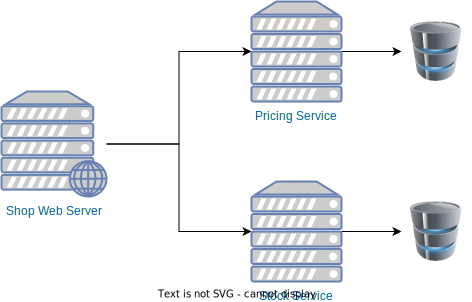

Extrospective OSPOs
Outline
- Extrospective???
- Lessons Learned
- Why it matters?
Extrospective OSPOs
Extrospective: Examining what is outside yourself.
Inbound & outbound
Outbound characteristics
- Policies around creating OSS
- Promote adoption of own OSS
- Governance
- Code production
Given this…
Would you consider it a risk if one of these modules was maintained by your developers in their free time?
Why are we accepting it when it comes to open source?
Working towards ensuring:
- Critical infrastructure actively maintained
- Projects not depending on a single company or organization
- Diversity of opinions
- Relieve workload of current maintainers
Mission:
Ensure the sustainability and secure the future of the Open Source Software infrastructure used.
Lessons learned
Meet Aiven's OSPO


And more to come…
Apache Kafka, Apache Flink, PostgreSQL and OpenSearch are trademarks of their respective owners.Some Aiven's OSPO facts
- Around 10 people
- Organized in chapters
- Distributed
- Growing phase
- 1 year old!
Our principles
- Community first
- Be recognized
- Be transparent
- More than just production of code
Oddities
- 3rd party owned IP
- Little to no control over backlog
- No control over timings
- Collaborating with competitors?
Let's play a game…
Build an Extrospective OSPO!
Developer type
1. Focus
Forget about quick turnarounds.
Code, release, observe, fix, release.
2. Autonomy
Self driven.
Developers should know how to prioritize their work.
3. Awareness
Can understand community needs.
4. Resiliency
Lots of proposed changes will be rejected, and not always because of technical reasons.
Getting talent
Creating a team
Team composition is crucial!
Having existing community members speeds up onboarding newcomers.
Pool
Pool is smaller than you think.
How many committers are there?
Around the globe
You'll need to hire talent where they are!
Hello multiple time zones!
Growing talent
Programs to promote OSS contributions internally.
Plankton Program — OSS Contribution = €
Management style
1. New toolset
Areas of impact are limited.
Timing, responsibilities… Suddenly, these are external.
2. Coach
Enabler from the side line.
3. Different leader
Not the expert in the room.
Leadership is not based on technical expertise.
Measuring success
What to measure?
You don't control a substantial part of the process.
Merges, releases, reviews… All these do not depend only on us.
Time is an illusion
Internal time scales are arbitrary.
A proposal
- Number of issues worked on
- Number of patches reviewed
- Community engagement (blog posts, mailing list, talks, bug reports…)
And now, hard work!
Why does it matter?
More than $$$
Monetary donations solve massive problems in OSS projects.
Maintenance burden is reduced only with more people.
Scalable solution
More extrospective OSPOs = More OSS developer mass.
More secure
It's not only about preventing incidents, it's about being able to react fast.
Everyone should have one?
NO!
Every company who could afford it should have one extrospective OSPO.